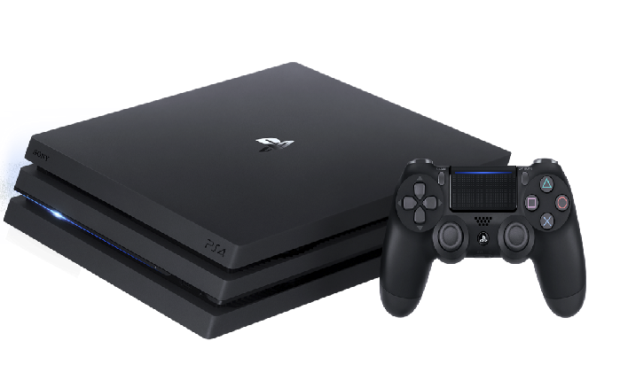
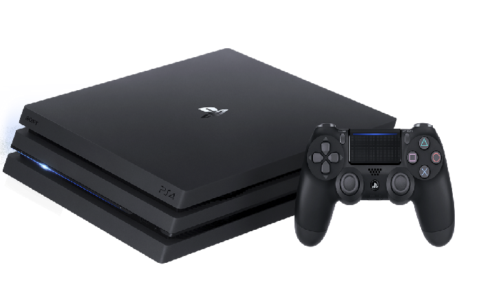

Consola Play Station PRO
Precio: 66000$
 

Velocidad de cuadros más rápida: Aumenta tu inmersión en los juegos de PS4 con velocidades de cuadro mejoradas en una variedad de juegos mejorados para PS4 Pro, lo cual es posible gracias a la potencia adicional de la PS4 Pro.
El doble de la potencia de la PS4: La PS4 Pro cuenta con el doble de potencia de GPU que la PS4 estándar, lo cual te permite disfrutar de una increíble claridad de imagen, una jugabilidad más fluida y tiempos de carga más cortos en ciertos juegos mejorados para PS4 Pro2.
Tecnología HDR :Disfruta de colores y detalles más vivos y realistas en cada parte de tu experiencia de juego cuando juegues juegos con HDR en un televisor compatible con HDR.